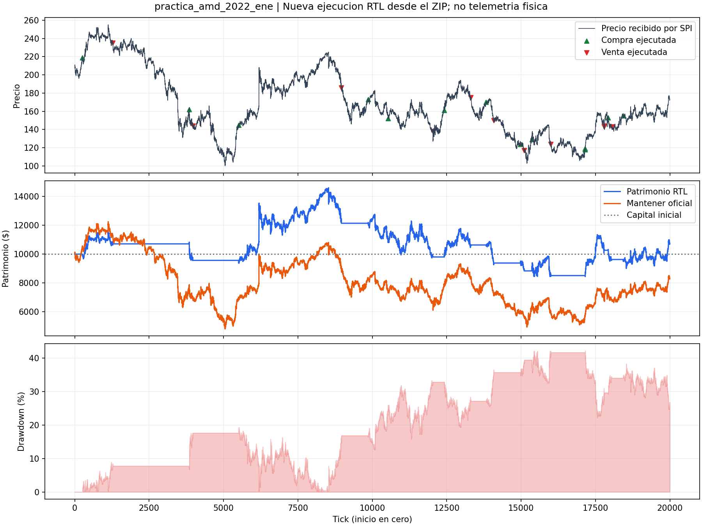
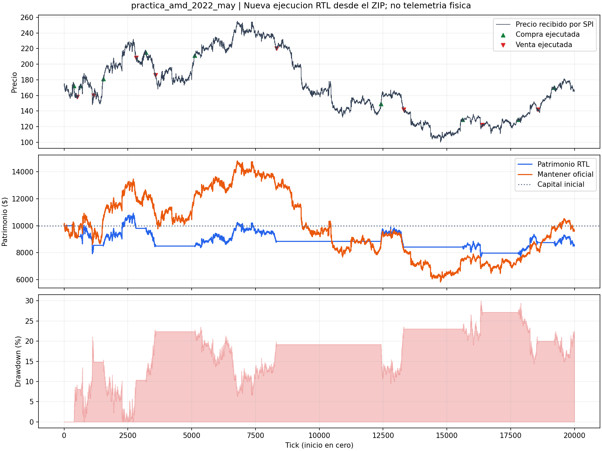
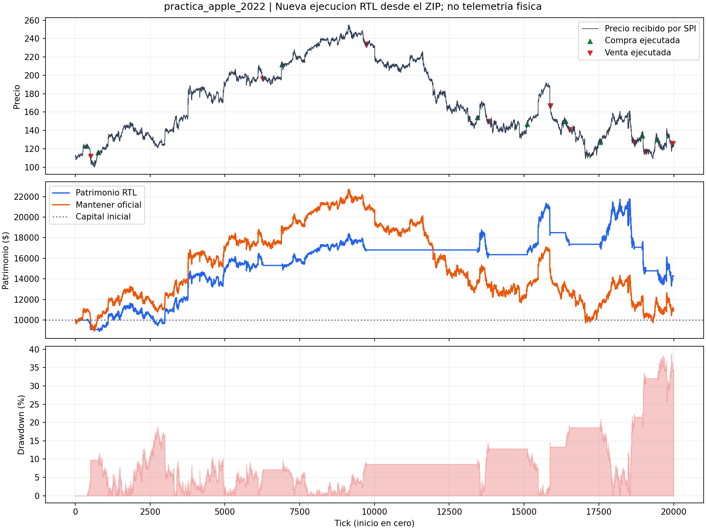
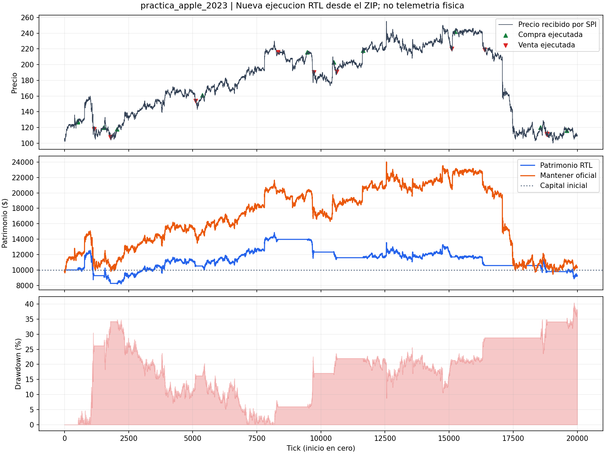
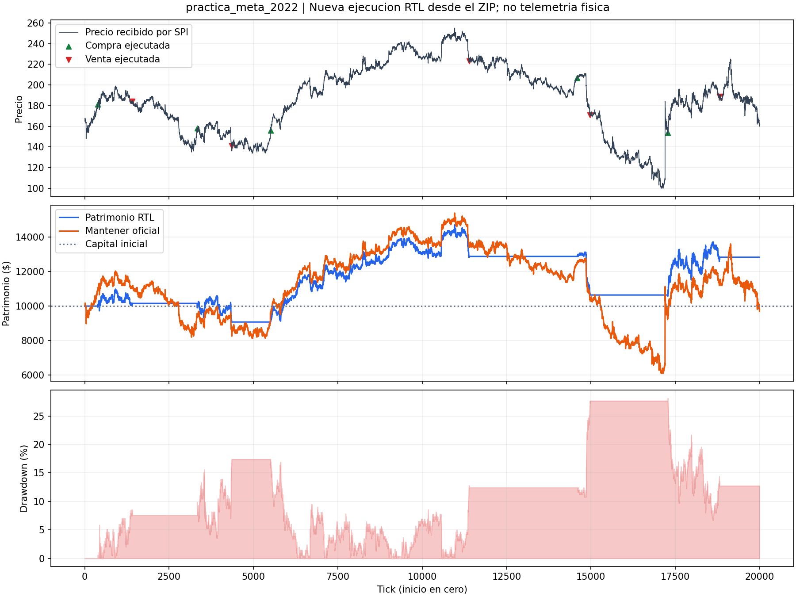
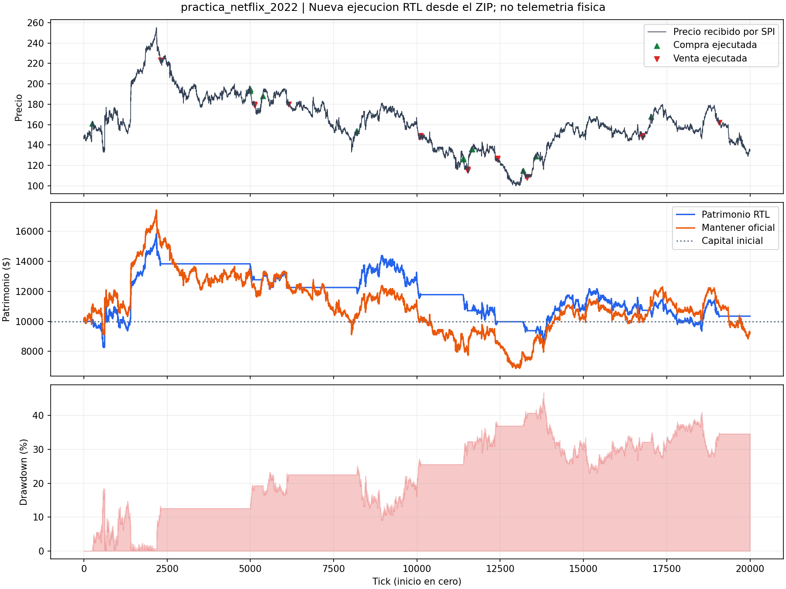
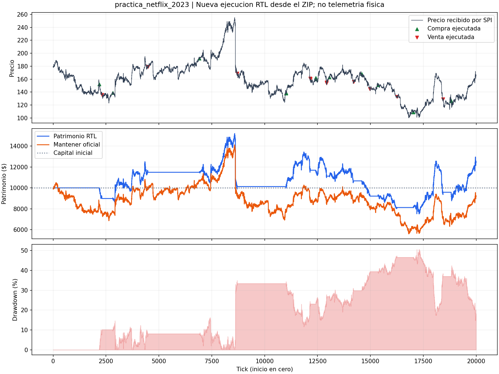
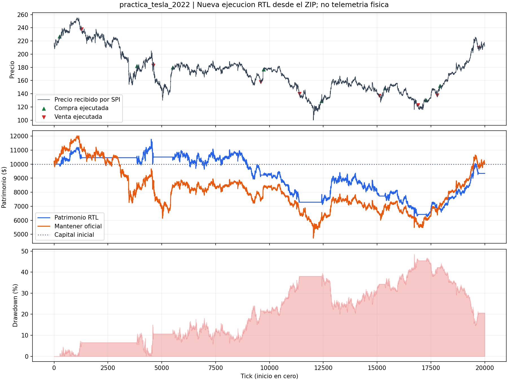

Proyecto_4_Series_Practica_export.zip · 8/8 PASS · 160,000 ticks · 98 compras y 92 ventas.
Nueva simulación RTL con el firmware actual y los precios exactos del ZIP. Los CSV coinciden con las ocho series conocidas. No es telemetría física ni una muestra nueva.
| Serie | RTL | Trader | Mantener | Ventaja | Compras | Ventas | Primera compra | Máx. µs |
|---|---|---|---|---|---|---|---|---|
| practica_amd_2022_ene | PASS | 10738 | 8315 | 2423 | 14 | 13 | 257 | 19.92 |
| practica_amd_2022_may | PASS | 8540 | 9647 | -1107 | 9 | 8 | 385 | 18.80 |
| practica_apple_2022 | PASS | 14263 | 11063 | 3200 | 19 | 19 | 385 | 20.72 |
| practica_apple_2023 | PASS | 9272 | 10371 | -1099 | 14 | 12 | 513 | 20.08 |
| practica_meta_2022 | PASS | 12836 | 9695 | 3141 | 5 | 5 | 385 | 19.20 |
| practica_netflix_2022 | PASS | 10346 | 9179 | 1167 | 15 | 15 | 257 | 20.24 |
| practica_netflix_2023 | PASS | 12432 | 9170 | 3262 | 14 | 12 | 2177 | 19.76 |
| practica_tesla_2022 | PASS | 9342 | 9995 | -653 | 8 | 8 | 257 | 17.84 |







